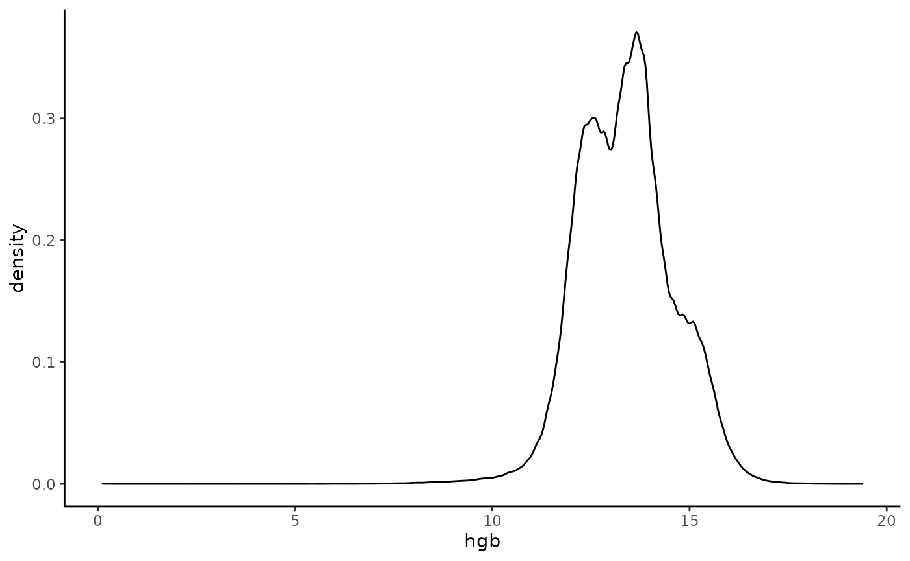

library(naryn)
#>
#> Attaching package: 'naryn'
#> The following object is masked from 'package:base':
#>
#> months
library(tidyverse)
theme_set(theme_classic())Getting started with naryn
Naryn is an implmenetation of a time-series database, for efficient storage, retrieval and analysis of electronic health records (EHR). The basic element of Naryn is a track - single numerical data element (e.g. RBC lab test result) that is recorded for many patients at various time points. A track can be thought of as a very sparse two-dimentional matrix with a row for each patient in the database, and a column for each hour. The patient space is defined by a required track ‘patients.dob’ which must include all patients with a single timepoint at their time of birth. Time reflects the difference in hours to 1/3/1867 00:00.
Connect to database
emr_db.connect("/home/nettam/emr/sample_db")
# show number of available tracks in database
length(emr_track.ls())
#> [1] 2995Extract all patients in database
all patients must be listed in a track called ‘patients.dob’. This track contains for each patient a single time point at the time of birth. In this mock database, the value per patient reflect their sex: 1 for male, 2 for female.
patients <- emr_extract("patients.dob", names = "sex")
head(patients)
#> id time ref sex
#> 1 1 535998 -1 1
#> 2 2 1024040 -1 2
#> 3 3 807917 -1 1
#> 4 4 864871 -1 1
#> 5 5 826123 -1 1
#> 6 6 817547 -1 2
patients %>%
count(sex) %>%
mutate(sex = c("male", "female")[sex])
#> sex n
#> 1 male 48621
#> 2 female 51379Define virtual track for Age
In order to know the age of a patient at different event times we will calculate the difference between the time of the event and the time the patient was born as found in the patients.dob track. This is done by defining a virtual track, whereby the souce of the virtual track is patients.dob. A time window from the time of the event backwords in time (up to max age = 120 years) should capture the time the patient was born. The difference in time is computed by the dt2.earliest function which computes the delta time (in hours) between the event time and the earliest appearance of a poin in the source track of the virtual track.
emr_vtrack.create("age", "patients.dob", time.shift = c(-120 * 365 * 24, 0), func = "dt2.earliest")extract age and wbc test value, at time of test for each test performed in 2010
emr_extract(c("age/(365*24)", "lab.WBC"), iterator = "lab.WBC", stime = emr_date2time(1, 1, 2010), etime = emr_date2time(1, 1, 2011), names = c("age", "wbc")) %>% head()
#> id time ref age wbc
#> 1 1 1252814 -1 81.82831 8.058747
#> 2 1 1253515 -1 81.90833 7.199924
#> 3 3 1257273 -1 51.29635 6.600398
#> 4 4 1253349 -1 44.34680 8.300706
#> 5 4 1254029 -1 44.42443 7.102493
#> 6 4 1256304 -1 44.68413 11.600000Define virtual track for Survival - time until death
assume that patients.dod is a track with a single entry at most for each patient in the EHR database at time of death.
emr_vtrack.create("survival", "patients.dod", time.shift = c(0, 120 * 365 * 24), func = "dt1.earliest")Extract survival time for patients with pancreatic cancer
# pancreatic cancer icd9 code is 157.9
# note that since icd9 diagnosis codes have a tree like structure, and X.0, X.00 are both valid codes and must be distinguishable,
# the diagnosis tracks all include a prefix of 1 for the minor code, so X.0 will be translated to icd9_X and a value of 10 will be stored.
# define a filter for just Pancreatic cancer in the 157 icd9 code.
emr_filter.create("pancreatic_cancer", "dx.icd9_157", val = 19)
# define a filter for previous pancreatic cancer (sometime in the past).
emr_filter.create("pancreatic_cancer_in_past", "dx.icd9_157", val = 19, time.shift = c(-120 * 365 * 24, -1))
# to find the first diagnosis of pancreatic cancer we will go over all 157 diagnosis, filter out those that are not pancreatic cancer and make sure there wasn't a prior diagnosis of pancreatic cancer
pancreatic_cancer_survival <- emr_extract("survival", iterator = "dx.icd9_157", filter = "pancreatic_cancer & !pancreatic_cancer_in_past")
nrow(pancreatic_cancer_survival)
#> [1] 25
head(pancreatic_cancer_survival)
#> id time ref survival
#> 1 12192 1256866 -1 19910
#> 2 17022 1311645 -1 NaN
#> 3 24217 1309964 -1 14332
#> 4 27971 1280769 -1 3927
#> 5 28135 1263030 -1 23106
#> 6 34252 1341200 -1 9016
# note that NA in survival means that the patient still has not died
# kaplan meier for survival of pancreatic cancer patients
# censoring is applied to reflect latest update of database (Jan 6, 2022)
pancreatic_cancer_survival <- pancreatic_cancer_survival %>%
mutate(
follow_time = ifelse(!is.na(survival), survival, emr_date2time(6, 1, 2022) - time),
status = ifelse(is.na(survival), 0, 1)
)
# fitting survival curve
fit <- survminer::surv_fit(survival::Surv(follow_time, status) ~ 1, data = pancreatic_cancer_survival)
survminer::ggsurvplot(fit, data = pancreatic_cancer_survival)
Extract HGB and age for all patients between the ages 60 and 70
# create an age filter. If we go over a BMI test value for a patient, then we expect there to be a date of birth entry between 70 and 60 years before. This would mean that the patient is in the required age range
emr_filter.create("age_60_70", "patients.dob", time.shift = c(-70, -60) * 365 * 24)
hgb_60_70 <- emr_extract(c("age/(24*365)", "lab.HGB"), iterator = "lab.HGB", filter = "age_60_70", names = c("age", "hgb"))
ggplot(hgb_60_70 %>% mutate(age = floor(age)) %>% count(age), aes(x = age, y = n)) +
geom_bar(stat = "identity")
ggplot(hgb_60_70, aes(x = hgb)) +
geom_density()
#> Warning: Removed 17 rows containing non-finite values (stat_density).
# adding sex information as hgb has bimodal distribution
# sex is encoded in the patients.dob track, 1 for male and 2 for female
emr_vtrack.create("sex", "patients.dob", time.shift = c(-120 * 365 * 24, 0), func = "earliest")
hgb_sex_60_70 <- emr_extract(c("age/(24*365)", "sex", "lab.HGB"), iterator = "lab.HGB", filter = "age_60_70", names = c("age", "sex", "hgb")) %>%
mutate(sex = factor(c("male", "female")[sex]))
ggplot(hgb_sex_60_70 %>% mutate(age = floor(age)) %>% count(age, sex), aes(x = age, y = n, fill = sex)) +
geom_bar(stat = "identity")
ggplot(hgb_sex_60_70, aes(x = hgb, color = sex, group = sex)) +
geom_density()
#> Warning: Removed 17 rows containing non-finite values (stat_density).Extract patients age at time of diagnosis of heart disease (diagnosis.411) that did not have diabetes (diagnosis.250)
# find onset of heart disease
emr_vtrack.create("heart_onset", "dx.icd9_411", time.shift = c(0, 120 * 365 * 24), func = "earliest.time")
emr_filter.create("has_heart_disease", "dx.icd9_411", time.shift = c(0, 120 * 365 * 24))
# retrieving the earliest time of heart disease for all patients in db that have a heart disease
heart_onset <- emr_extract("heart_onset", iterator = "patients.dob", filter = "has_heart_disease")
# filter patients that already have diabetes before heart disease
emr_filter.create("has_diabetes", "dx.icd9_250", time.shift = c(-120 * 365 * 24, 0))
heart_onset_no_diabetes <- emr_extract("age/(365*24)", iterator = heart_onset %>% select(id, time = heart_onset), filter = "!has_diabetes", names = "age")
head(heart_onset_no_diabetes)
#> id time ref age
#> 1 6 1259009 -1 50.39521
#> 2 31 1229936 -1 69.97317
#> 3 36 1236550 -1 42.01963
#> 4 66 1237208 -1 71.25753
#> 5 114 1320426 -1 68.11872
#> 6 132 1352258 -1 68.12420Extract median Hemoglobin for all males between ages 60 to 70
# define vtrack for computing the median value of hgb track, assuming patients.dob will be used as the iterator (each patient will be examined once)
emr_vtrack.create("median_hgb", "lab.HGB", time.shift = c(60, 70) * 365 * 24, func = "quantile", params = c(0.5))
# define a filter for males only
emr_filter.create("is_male", "patients.dob", time.shift = c(0, 0), val = 1)
# extract median_hgb for males only
male_hgb_60_70_q50 <- emr_extract("median_hgb", iterator = "patients.dob", filter = "is_male")
# comparing with female median hgb
female_hgb_60_70_q50 <- emr_extract("median_hgb", iterator = "patients.dob", filter = "!is_male")
plot(density(male_hgb_60_70_q50$median_hgb, na.rm = T), col = "blue", main = "median hgb")
lines(density(female_hgb_60_70_q50$median_hgb, na.rm = T), col = "red")
Compute distribution of HGB by age and sex
hgb_dist <- emr_dist("age/(24*365)", c(20, 50, 90),
"sex", NULL,
"lab.HGB", seq(10, 16, by = 0.5),
iterator = "lab.HGB",
dataframe = TRUE,
names = c("age", "sex", "hgb"),
right = FALSE
)
head(hgb_dist)
#> age sex hgb n
#> 1 [20,50) 1 [10,10.5) 266
#> 2 [50,90) 1 [10,10.5) 2948
#> 3 [20,50) 2 [10,10.5) 6930
#> 4 [50,90) 2 [10,10.5) 8402
#> 5 [20,50) 1 [10.5,11) 344
#> 6 [50,90) 1 [10.5,11) 4355
ggplot(hgb_dist %>% mutate(sex = factor(c("male", "female")[sex])), aes(x = hgb, y = n, colour = age, group = age)) +
geom_line() +
facet_wrap(~sex) +
theme_bw() +
theme(axis.text.x = element_text(angle = 90, vjust = 0.5, hjust = 1))
### Count number of patients by age that are in the system in january 2020
# patients in the system must have already been born, have not yet died, registered with the EHR system and that haven't left for good
emr_filter.create("born", "patients.dob", time.shift = c(-120 * 365 * 24, 0))
emr_filter.create("dead", "patients.dod", time.shift = c(-120 * 365 * 24, 0))
emr_filter.create("registered", "patients.status.register", time.shift = c(-120 * 365 * 24, 0))
emr_filter.create("left_for_good", "patients.status.lfg", time.shift = c(-120 * 365 * 24, 0))
age_dist_2020 <- emr_dist("age/(365*24)", 0:120, "sex", NULL,
iterator = 1,
stime = emr_date2time(1, 1, 2020),
etime = emr_date2time(1, 1, 2020),
filter = "born & !dead & registered & !left_for_good",
names = c("age", "sex"),
dataframe = TRUE,
right = FALSE
)
head(age_dist_2020 %>% filter(n > 0))
#> age sex n
#> 1 [19,20) 1 38
#> 2 [20,21) 1 105
#> 3 [21,22) 1 176
#> 4 [22,23) 1 250
#> 5 [23,24) 1 370
#> 6 [24,25) 1 436